📋 Contenido
- 🧭 Cómo moverse por la página
- 🏠 Inicio
- 🗳️ Elecciones
- 📍 Mapa
- 🗂️ Formatos y guías
- 🎓 Aprenda
- 📜 Estatutos
- 💬 Asistente virtual
- 📞 En el celular
- ❓ Preguntas frecuentes
Para llenar la solicitud de elección paso a paso, vea también las guías 1 a 4 en Formatos y guías › Guías.
🧭 Cómo moverse por la página
Funciona igual en todas las pantallas.
Menú y letra más grande
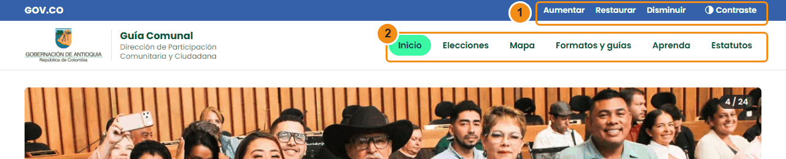
- Aumentar y Disminuir: agrandan o achican la letra. Contraste: colores más fuertes para ver mejor.
- Menú con las 6 secciones. Toque la que necesite.
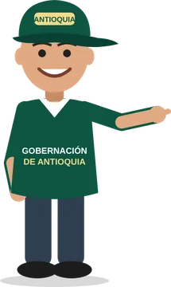
En el celular, el menú se abre con el botón Menú, arriba a la derecha.
Volver y saber dónde está
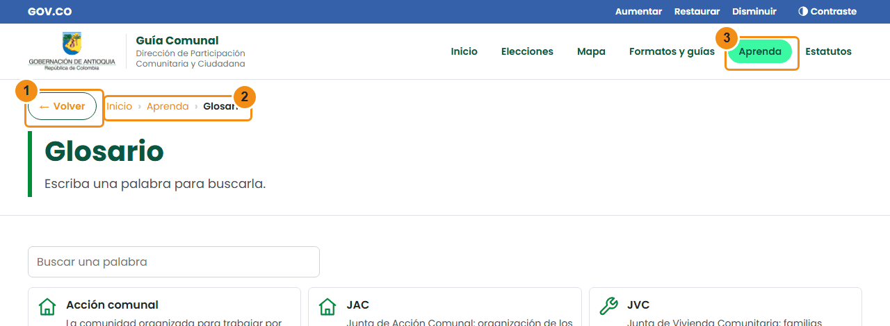
- ← Volver: regresa a la pantalla anterior de la sección.
- Ruta: dice en qué parte de la página está. Puede tocar cualquier nivel.
- La sección en la que está queda marcada en el menú.
El botón atrás del celular o del navegador también funciona: lo devuelve a la pantalla donde estaba.
🏠 Inicio
La primera pantalla: fotos, seis accesos grandes y ayuda.
Página de inicio
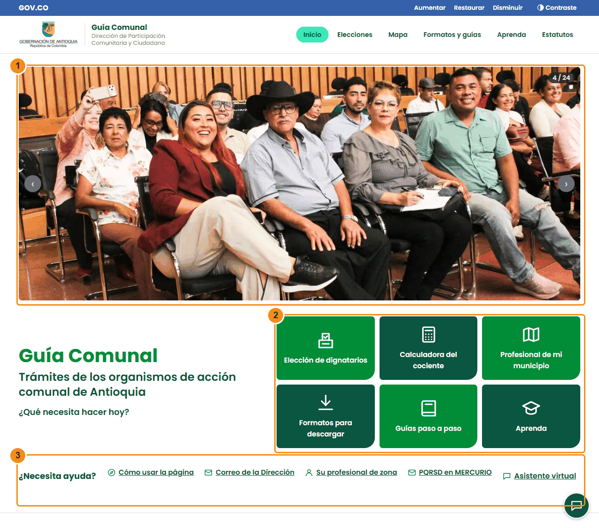
- Fotos de la acción comunal en Antioquia. Pasan solas; las flechas las cambian.
- Seis accesos a lo más usado: elección, calculadora, mapa, formatos, guías y aprenda.
- ¿Necesita ayuda? Correo de la Dirección, su profesional de zona, PQRSD y asistente.
🗳️ Elecciones
Todo lo de la elección de dignatarios, una tarea por pantalla.
Entrada de Elecciones
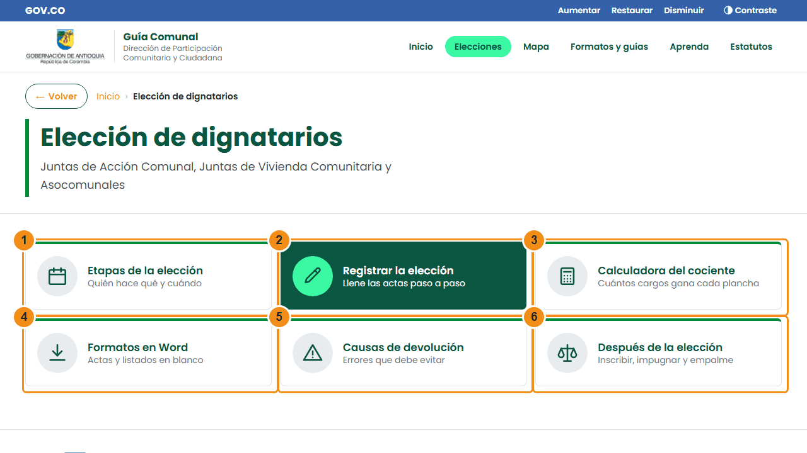
- Etapas: qué se hace en cada momento, quién lo hace y cuándo.
- Registrar la elección: llena las actas y revisa la solicitud con el semáforo.
- Calculadora del cociente: quién queda elegido.
- Formatos oficiales en Word.
- Causas de devolución y cómo evitarlas.
- Después de la elección: inscribir, impugnar y empalme.
Etapas de la elección
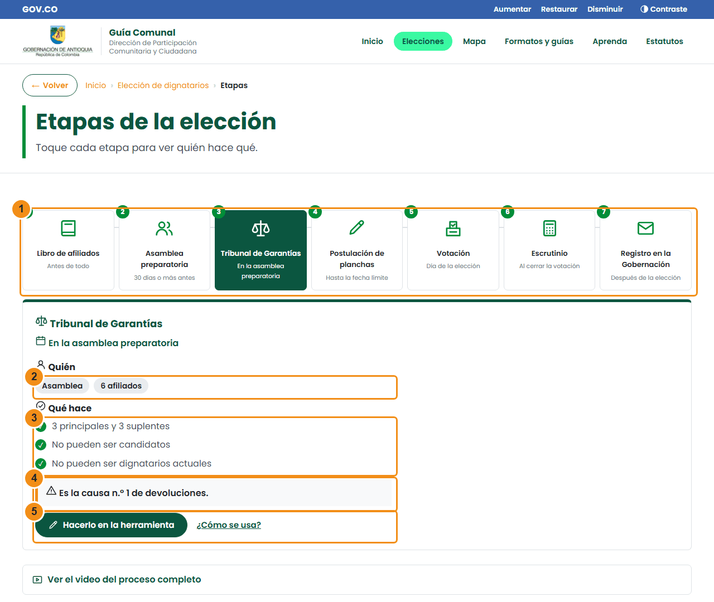
- Las etapas en orden. Toque una para ver el detalle.
- Quién participa.
- Qué se hace, en pocas palabras.
- El error más común, para evitarlo.
- Ir a la herramienta en ese paso o ver la guía.
Registrar la elección: cómo es cada paso
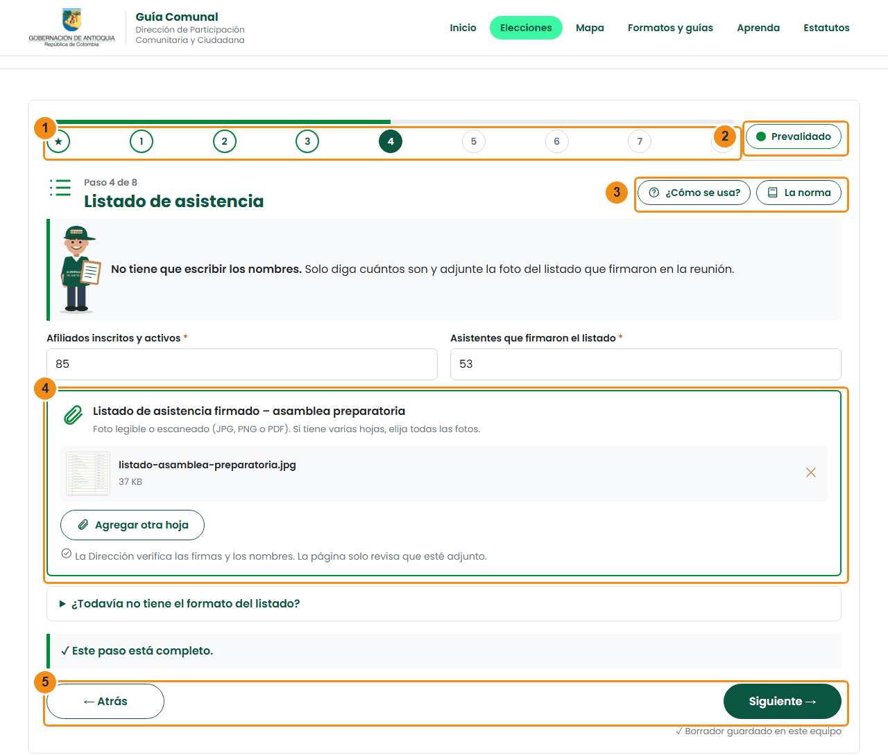
- 8 pasos, uno por pantalla. Toque un número para ir a ese paso.
- Semáforo del paso: rojo falta algo, amarillo revise, verde listo.
- ¿Cómo se usa? y La norma explicada fácil.
- Foto del listado firmado. Se toma con la cámara o se elige del equipo.
- Atrás y Siguiente. Lo que escribe se guarda solo en este equipo.
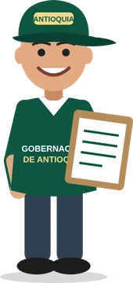
Puede llenar la solicitud por partes: si cierra la página, al volver encuentra el borrador en este mismo equipo y navegador. Cada paso se explica en detalle en las guías 1 a 4.
Registrar la elección: revisar y descargar
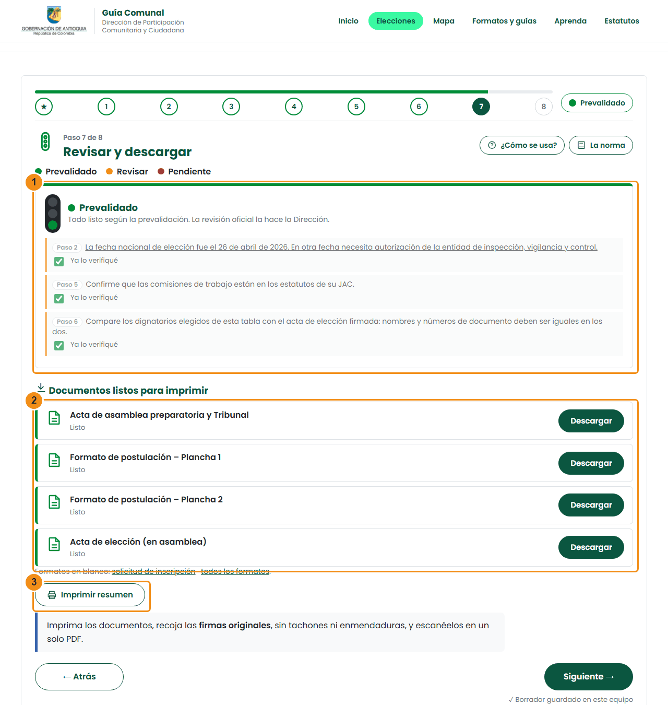
- Revisión de toda la solicitud. Si falta algo, dice qué y lo lleva al dato.
- Actas en Word, ya llenas. Cada una se descarga cuando sus pasos están en verde.
- Resumen para imprimir.
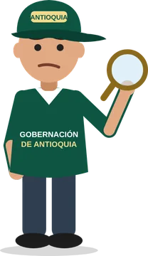
Verde no es aprobado: es una revisión previa. La revisión oficial la hace la Dirección. Imprima las actas y recoja las firmas originales.
Registrar la elección: enviar a la Dirección
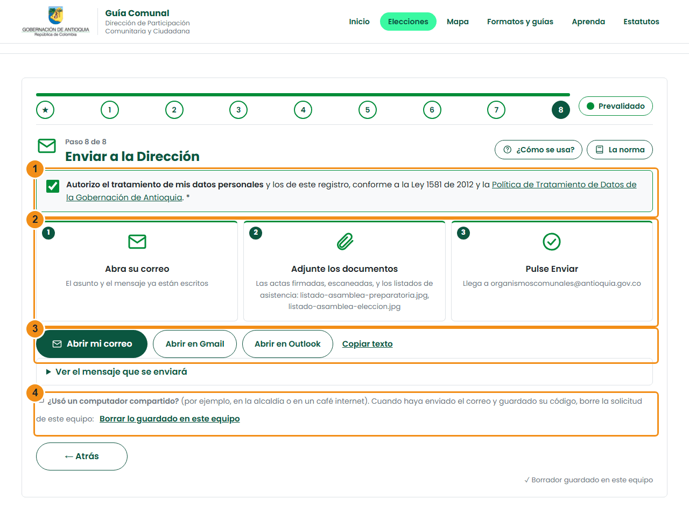
- Autorización de datos personales (Ley 1581 de 2012).
- Tres pasos: abrir el correo, adjuntar actas y listados, y enviar.
- Abre su correo con el asunto y el mensaje ya escritos.
- ¿Computador compartido? Al terminar, borre lo guardado en ese equipo.
La solicitud llega a organismoscomunales@antioquia.gov.co. Guarde su código de registro: lo necesita si debe hacer una subsanación.
Calculadora del cociente: escribir los votos
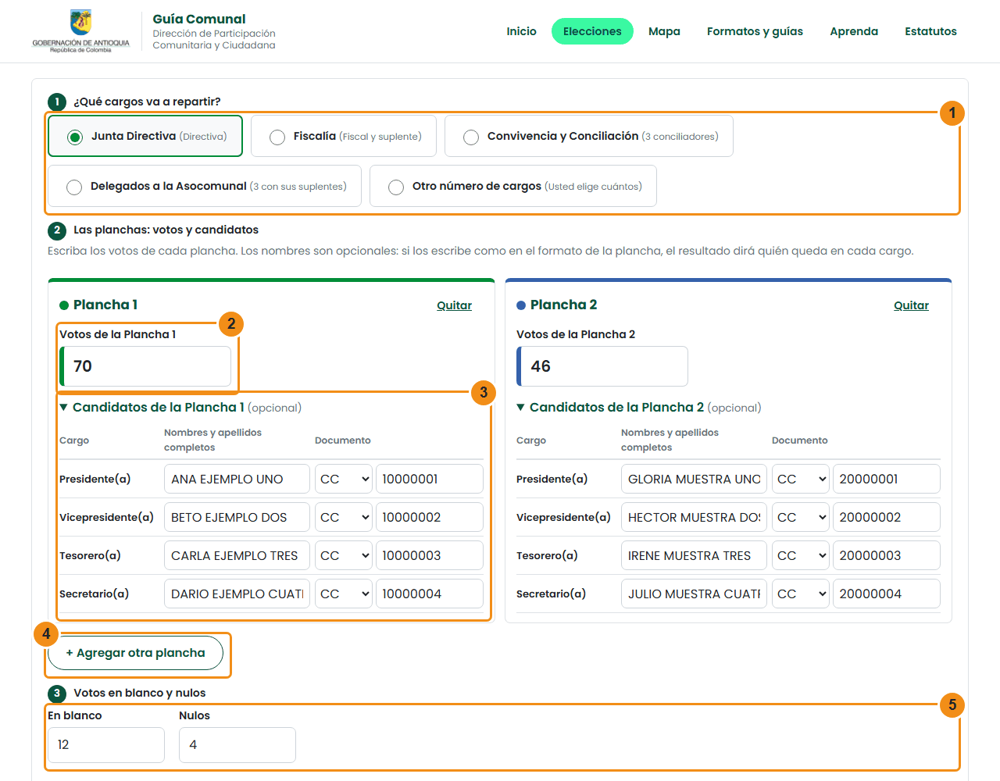
- Qué se elige: directiva, fiscalía, conciliación, delegados u otro.
- Votos de cada plancha.
- Candidatos (opcional): así el resultado dice el nombre de quien queda elegido.
- Agregar otra plancha.
- Votos en blanco y nulos.
Para practicar, toque «Probar con un ejemplo». La calculadora no guarda nada: es solo para hacer la cuenta.
Calculadora del cociente: resultado
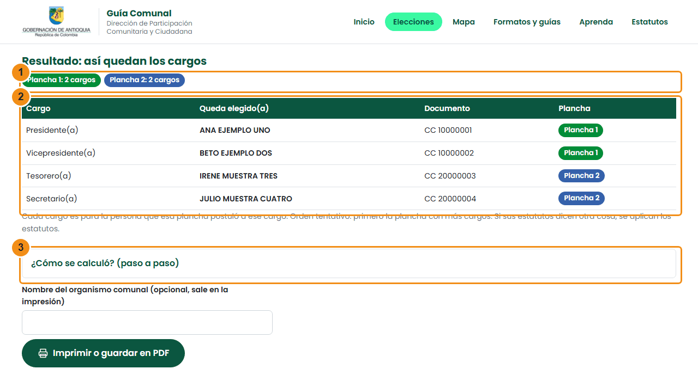
- Resumen del reparto por plancha.
- Quién queda elegido en cada cargo, con su documento y su plancha.
- ¿Cómo se calculó? El paso a paso del cociente y el residuo.
La fiscalía no se reparte por cociente: la plancha con más votos gana el fiscal y su suplente.
Causas de devolución
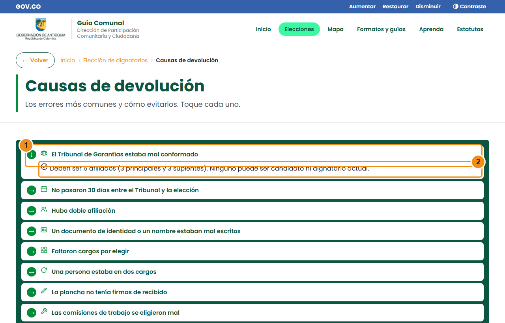
- Cada causa en una frase. Toque para ver cómo evitarla.
- La solución, corta.
Después de la elección
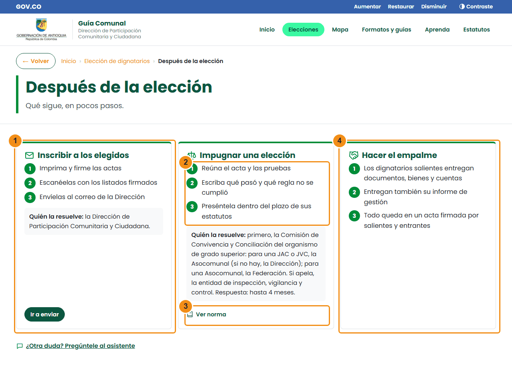
- Inscribir a los elegidos.
- Impugnar: los pasos.
- Ver norma: el detalle, para quien lo quiera.
- Empalme entre la junta saliente y la nueva.
📍 Mapa
Quién lo atiende en su municipio.
Buscar su municipio
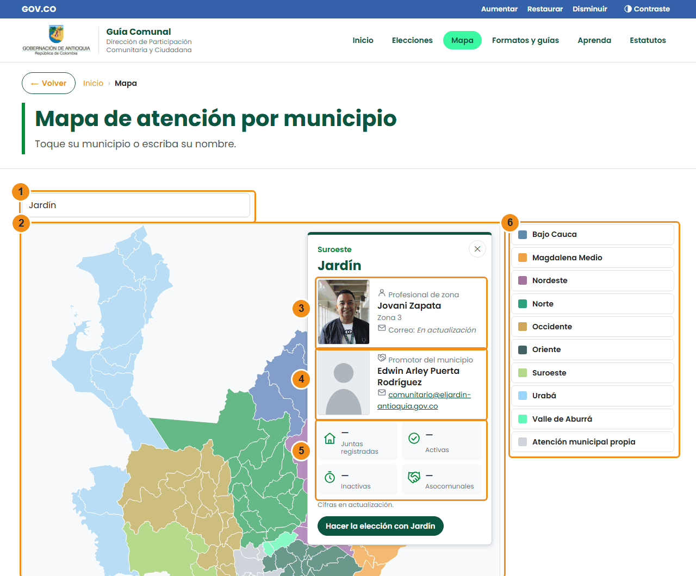
- Buscar: escriba el nombre de su municipio.
- O toque su municipio en el mapa.
- Profesional de zona de la Gobernación y su correo.
- Promotor del municipio y su contacto.
- Organismos comunales del municipio.
- Subregiones: toque una para acercar el mapa.
Municipios que atiende su alcaldía
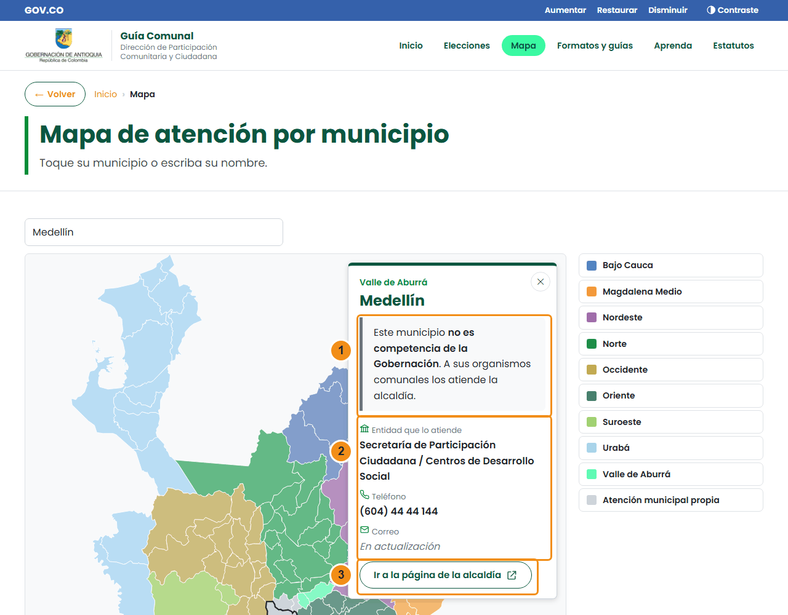
- Los municipios en gris los atiende su alcaldía, no la Gobernación.
- Entidad que los atiende y su contacto.
- Página de la alcaldía.
🗂️ Formatos y guías
Para descargar, imprimir o consultar.
Formatos en Word
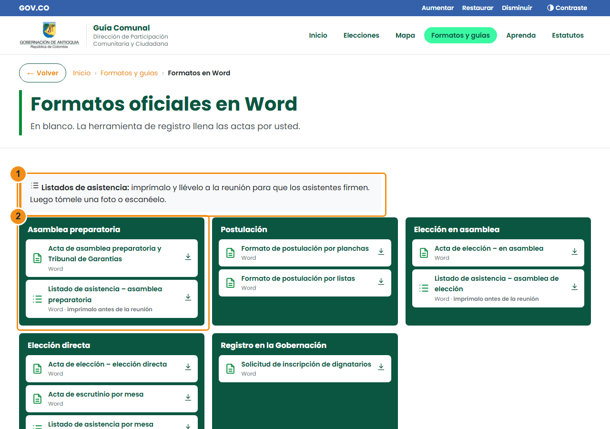
- El listado de asistencia se imprime antes de la reunión, para que firmen.
- Formatos agrupados por momento de la elección. Toque uno para descargarlo.
Si usa Registrar la elección, las actas salen ya llenas con sus datos. Aquí están en blanco, para llenarlas a mano.
Guías paso a paso
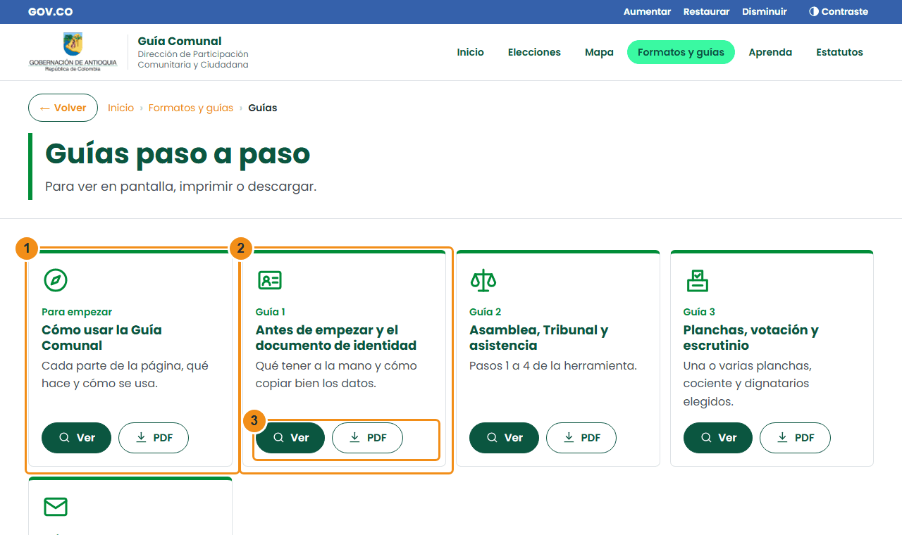
- Esta guía: cómo usar la página.
- Guías 1 a 4: la herramienta de elección, paso a paso.
- Ver en pantalla o descargar en PDF para imprimir.
Consultas oficiales
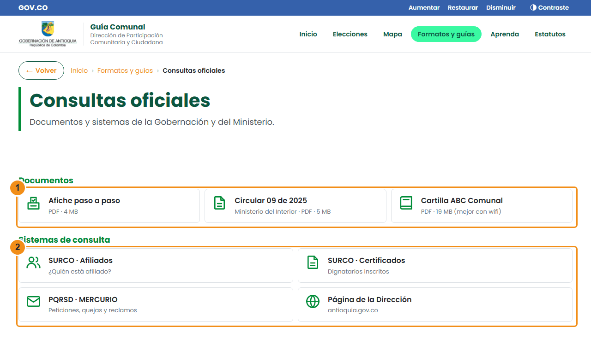
- Documentos oficiales para leer o descargar.
- SURCO, PQRSD y página de la Dirección.
SURCO a veces solo abre desde la red de la Gobernación. Si no le abre, la página le muestra otras opciones.
🎓 Aprenda
Lo básico de la acción comunal, en pocas palabras.
Entrada de Aprenda
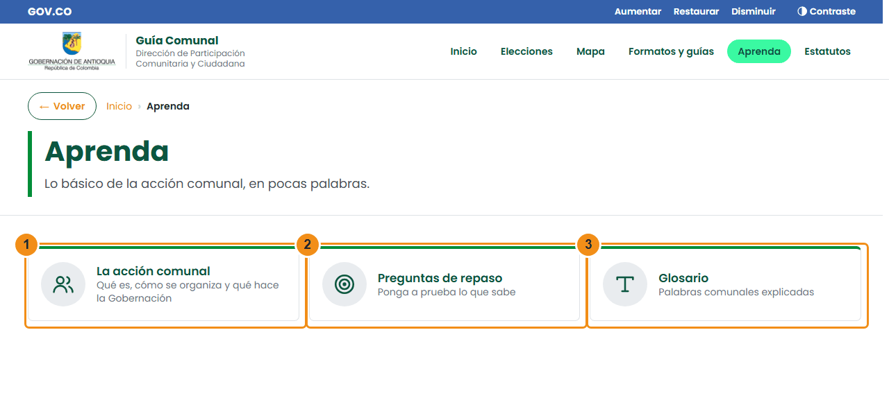
- La acción comunal: qué es, cómo se organiza y videos cortos.
- Preguntas de repaso en forma de juego.
- Glosario: qué significa cada palabra.
Preguntas de repaso
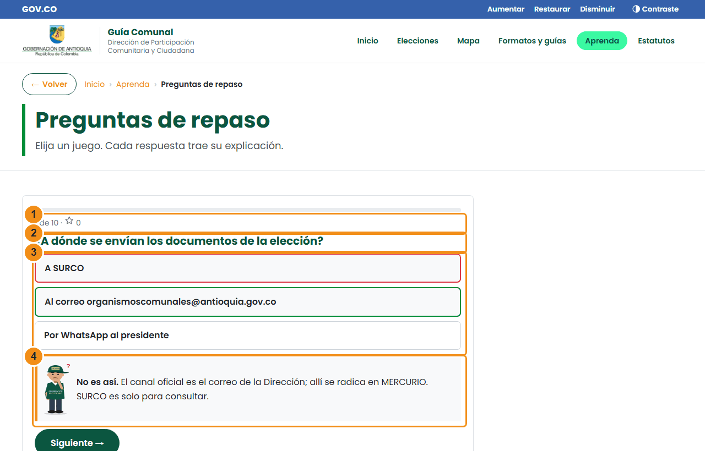
- Avance y puntos.
- La pregunta.
- Toque una respuesta: la correcta se marca en verde.
- La explicación.
Glosario
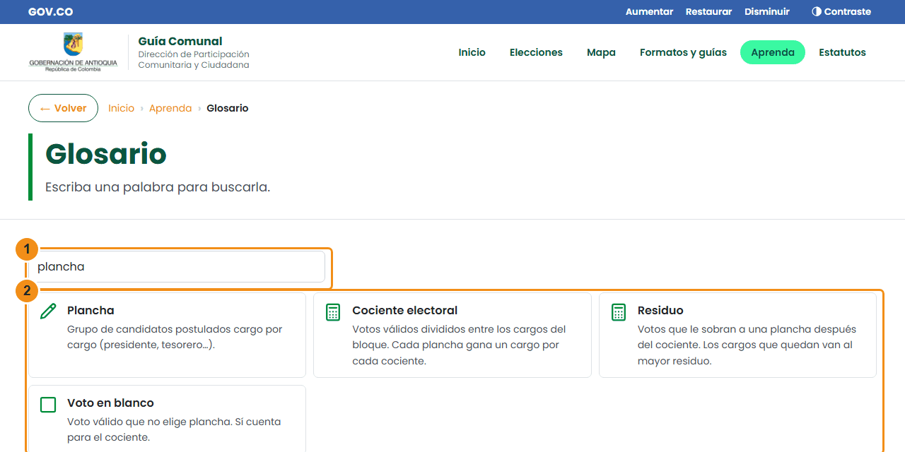
- Buscador: escriba una palabra.
- La palabra y su explicación.
📜 Estatutos
Los próximos trámites de la Guía Comunal.
Reforma de estatutos
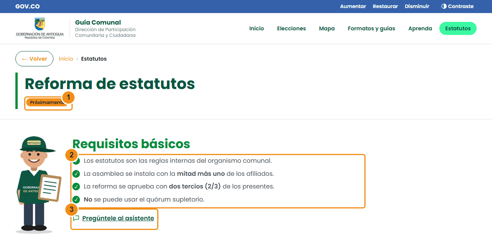
- Próximamente: guía, formatos y herramienta.
- Requisitos básicos de la reforma.
- Preguntar al asistente.
💬 Asistente virtual
Botón abajo a la derecha, en todas las pantallas.
Preguntarle al asistente
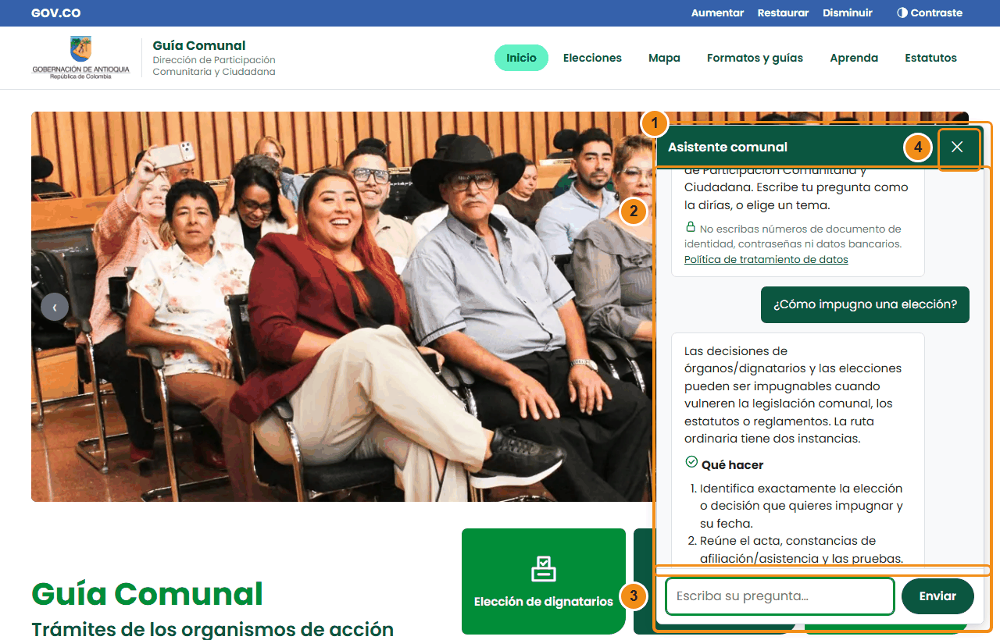
- Se abre con el botón Asistente virtual.
- Responde en pasos cortos, con enlaces a la página.
- Escriba su pregunta con sus propias palabras.
- Cerrar. En el celular también se cierra con atrás.
El asistente orienta, pero no reemplaza a la Dirección. Si su caso es especial, escriba a organismoscomunales@antioquia.gov.co.
📞 En el celular
La misma página, acomodada a la pantalla del teléfono.
La página en el celular
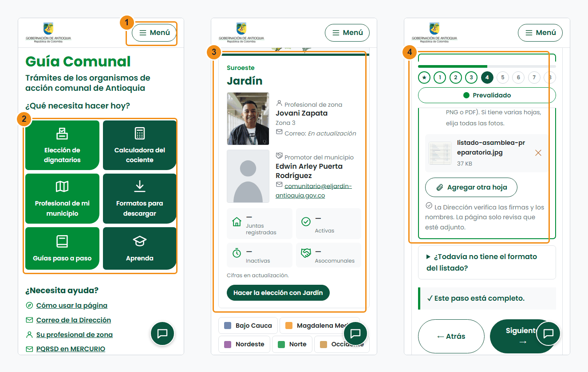
- El menú se abre con este botón.
- Accesos grandes, fáciles de tocar.
- La información del municipio aparece debajo del mapa.
- La foto del listado se toma con la cámara del celular.
❓ Preguntas frecuentes
¿Dónde queda guardado lo que llené?
Solo en el equipo y el navegador donde lo llenó. No se envía a ningún lado hasta que usted mande el correo. Si cambia de celular o de computador, no lo va a encontrar.
Usé un computador compartido. ¿Qué hago?
Cuando haya enviado el correo y guardado su código, en el paso 8 toque «Borrar lo guardado en este equipo».
¿Qué significan los colores del semáforo?
Pendiente: falta algo o hay un error. Revisar: confirme el dato y toque «Ya lo verifiqué». Prevalidado: la página no encontró problemas.
¿Cómo descargo o imprimo?
Los botones con la flecha hacia abajo descargan el archivo (Word o PDF). Lo encuentra en la carpeta Descargas de su equipo. Los botones Imprimir le dejan imprimir o guardar en PDF.
Me equivoqué y ya envié la solicitud.
Si la Dirección le pide corregir algo, vuelva a Registrar la elección y toque «Hacer una subsanación», o escoja «Subsanación» en el paso 1 y escriba el código anterior.
La letra se ve muy pequeña.
Arriba a la derecha, toque Aumentar para agrandarla. En el celular también puede abrir los dedos sobre la pantalla.
✅ Para recordar
- Lo que llena se guarda solo en el equipo donde lo llenó.
- El semáforo verde es una revisión previa: la revisión oficial la hace la Dirección.
- Si tiene dudas, use el asistente o escriba a organismoscomunales@antioquia.gov.co.